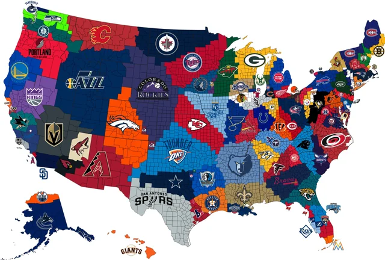

Introduction
My favorite sports teams come from two iconic Midwest cities: Green Bay and Chicago. The Green Bay Packers hold a special place in my heart. With their rich history, legendary players like Brett Favre and Aaron Rodgers, and a devoted fanbase, the Packers have set a standard for excellence in the NFL. I also follow the Chicago Cubs, a team with a deeply passionate fanbase and a storied history. The Cubs’ unforgettable World Series win in 2016 after a 108-year drought was a historic moment, and their perseverance and dedication to the game continue to inspire me. Both teams represent the spirit of the Midwest—grit, tradition, and a love for the game that goes beyond the field.
My Favorite Midwest Football team
Packers
The Green Bay Packers are more than just a football team; they are a symbol of tradition, community, and resilience. As the third-oldest franchise in the NFL, the Packers have a rich history filled with unforgettable moments, from their dominance in the 1960s under Vince Lombardi to their recent Super Bowl victories. Known for their loyal fanbase and the unique ownership structure—where the team is publicly owned by fans—Green Bay's football culture stands apart from any other. With iconic players like Brett Favre, Aaron Rodgers, and Reggie White, the Packers have consistently been a force to be reckoned with in the NFL. Their legacy of success, commitment to excellence, and passionate supporters make them a true institution in American sports.
My Favorite Midwest Baseball team
The Cubs
The Chicago Cubs are one of the most iconic teams in Major League Baseball, with a storied history that stretches back over a century. Known for their loyal and long-suffering fanbase, the Cubs became synonymous with the 'Curse of the Billy Goat' for 108 years, enduring decades of near-misses and heartbreak. However, in 2016, they finally broke the curse, winning their first World Series title in over a century, an unforgettable moment that solidified their place in baseball history. The Cubs’ historic home, Wrigley Field, is a landmark in Chicago, where generations of fans have come together to celebrate their love for the game. With legends like Ernie Banks, Ryne Sandberg, and Kris Bryant, the Cubs represent the heart of Chicago, filled with passion, resilience, and a dedication to the game that transcends victories and losses.